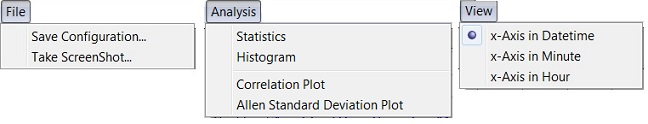

Menus of Time Series Plot¶
File menu¶
Save configuration¶
Save figure properties, expression, filter and other settings into a configuration file so that they can be loaded easily in the future. Properties to be saved can be specified in the Figure Capture panel.

- If all features are selected, loading configuration file will reproduce the workplace.
- If Data file is not captured, loading configuration file will apply all other parameters to data file in the memory.
- If X (Y) range is not captured, figures will be auto scaled on x (y) axis.